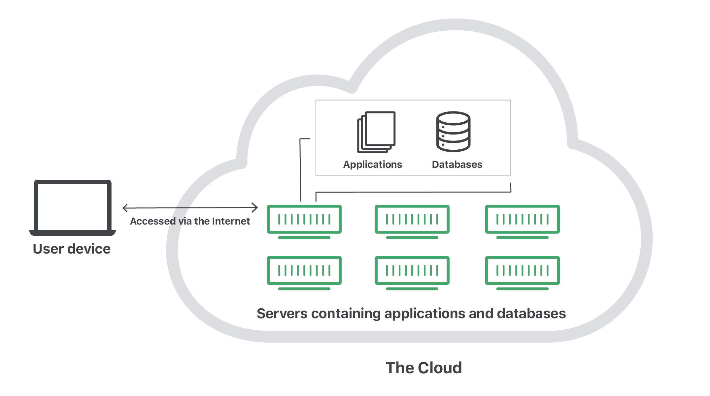

Basics of Cloud Architecture
Disclaimers
What is the Cloud?

Public Cloud
- Third-party hosted
- Intended for making something publically accessible
Private Cloud
- Self-hosted or Third-party hosted
- Intended for making something accessible to a limited set of people/organisations
- Usually requires additional security to access resources (e.g. VPN)
Multicloud
- Two or more clouds
- TODO: Add more
Hybrid Cloud
- Mixture of cloud types
- TODO: Add more
Which Type to use?
- Do you even need to use the cloud?
- Depends on:
- Regulatory restrictions/requirements
- Security/Accessibility
- TODO: Add more
Storage
- Object Storage
- Block Storage
- Storage type options (SSD, HDD):
- Storage location options (Region):
- Regularly check access restrictions
Big Data
- Data Warehousing
- Stream data processing
Networking
- API Gateway
- Event/Messaging Bus
Compute
- Self-contained application
- Triggers
- Configuration
- Platform-managed
- Usually cost effective
- Automatic integration into logging/monitoring systems
- Limited Language Support
- Resource Restrictions
- Kubernetes
- Good for heavy processing / large workloads
- Could be more cost-effective for request-heavy system
- Better language support -> legacy applications
Conclusions